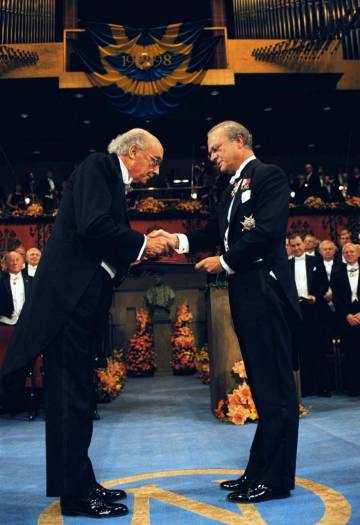

José Saramago
Poeta, Jornalista, Romancista, Dramaturgo e Argumentista
Início
Biografia
Vida
Obras
Prémios
Contacto
Sobre
Mais sobre mim

10 condecorações/prémios de José Saramago
Prêmio Nobel de Literatura;
Prêmio Internacional de Narrativa Città di Penne-Mosca;
Prêmio da Associação de Críticos Portugueses;
Prêmio Literário do Município de Lisboa;
Prêmio Internacional Ennio Flaiano;
Grande Prêmio de Teatro da Associação Portuguesa de Escritores;
Prêmio Rosalía de Castro;
Grande Prêmio de Romance e Novela da Associação Portuguesa de Escritores;
Prêmio Camões;
Prêmio Scanno da Universidade Gabriele d’Annunzio ;
Prémio Nobel da Literatura